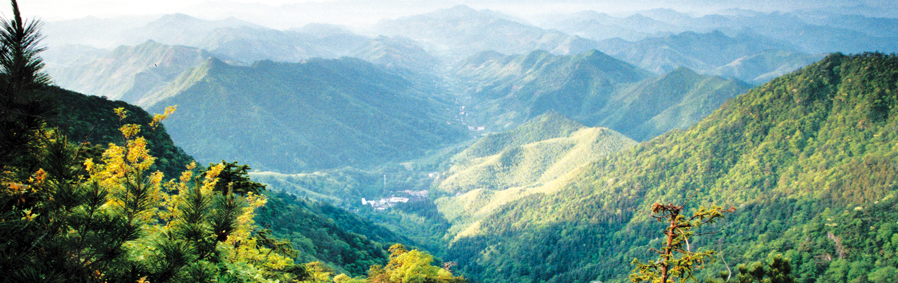

1、平台建设目标
结合天目山地理学野外综合实习，围绕地貌、水文、植被、土壤以及3S技术等地理学野外实习内容， 通过虚拟仿真的方法使学生事先对实习区域有更加直观、深入的了解，在室内能基本了解野外调查方法以及3S技术的应用，使野外实习教学能更好地开展。

2、平台设计
平台分五个模块：认识实习区域、野外调查方法、典型地理现象模拟、实验报告以及平台维护。
认识实习区域包括实习区域漫游、地貌、水文、植被、土壤以及多时相遥感图像等子模块，通过研究区域三维场景的展示和专题图层的叠置， 引导学生通过交互操作认识实习区域。如点击“植被”子模块，将显示该子模块的实验内容，学生按照提示进行操作，并提交实验结果。
野外调查方法包括植被样方调查、土壤剖面调查、移动GIS应用等，其中，植被样方调查和土壤剖面调查以虚拟仿真形式演示， 学生可以交互操作；移动GIS应用是利用移动设备进行数据采集，并在移动设备或桌面设备上查看采集的数据。
典型地理现象模拟以虚拟仿真形式模拟典型地理现象形成与发展，如土地利用变化及预测，学生可以设置参数（各种环境条件）， 显示不同条件下的典型地理现象形成与发展。
实验报告模块提供学生在线输入实验报告界面，点击“提交”按钮，将提交实验报告到后台。
系统维护用于自定义实习区域和实习数据。
3、平台开发
平台中的WebGIS功能利用ArcGIS API for JavaScript开发，所调用的三维场景服务是在ArcGIS online平台中创建并托管发布； 植被样方调查、土壤剖面观测等方面的人机交互虚拟仿真利用Unity3D开发。
4、平台使用
平台是B/S架构，用户通过浏览器即可访问使用本平台，平台的网址为：http://122.112.231.165/tms/src/webapp/index.html。 由于unity3D平台限制，加上多次运行速度测试比较，目前平台只支持Chrome浏览器。